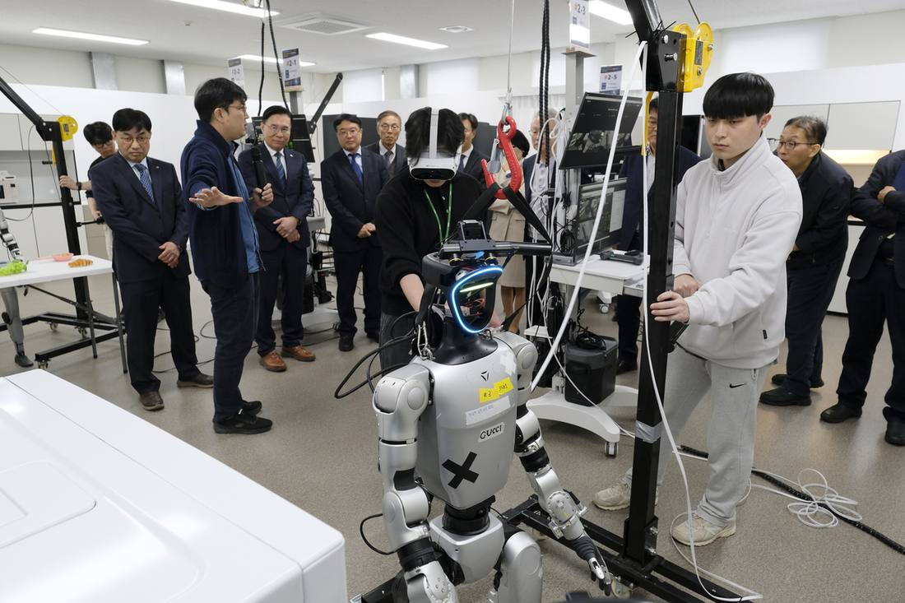
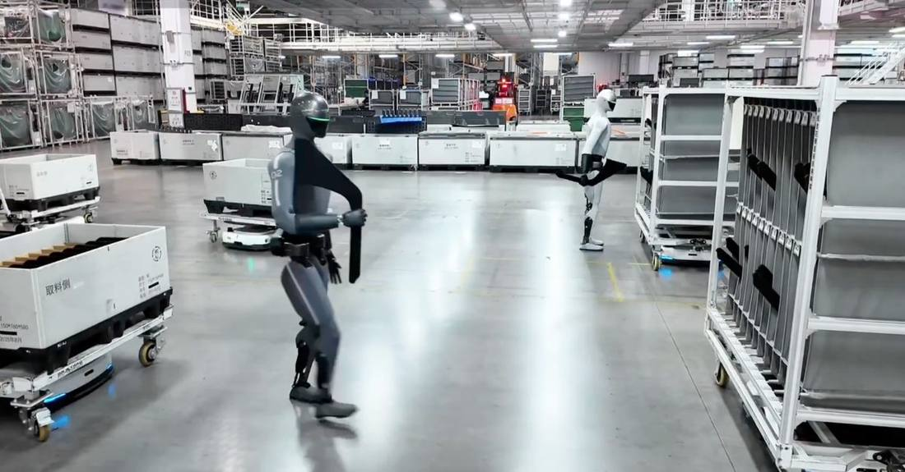
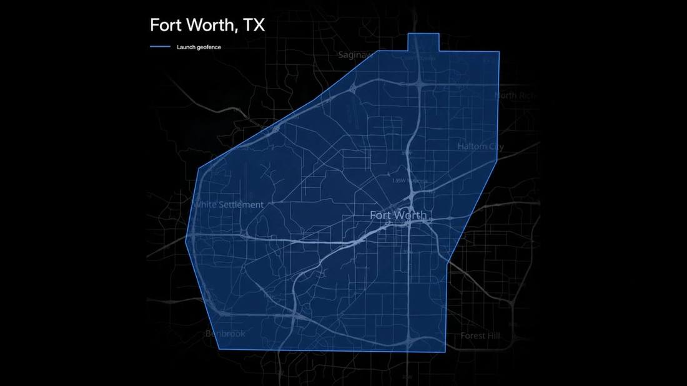
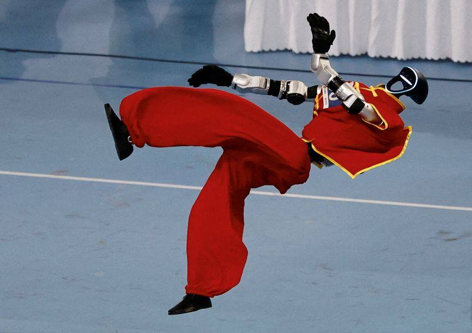
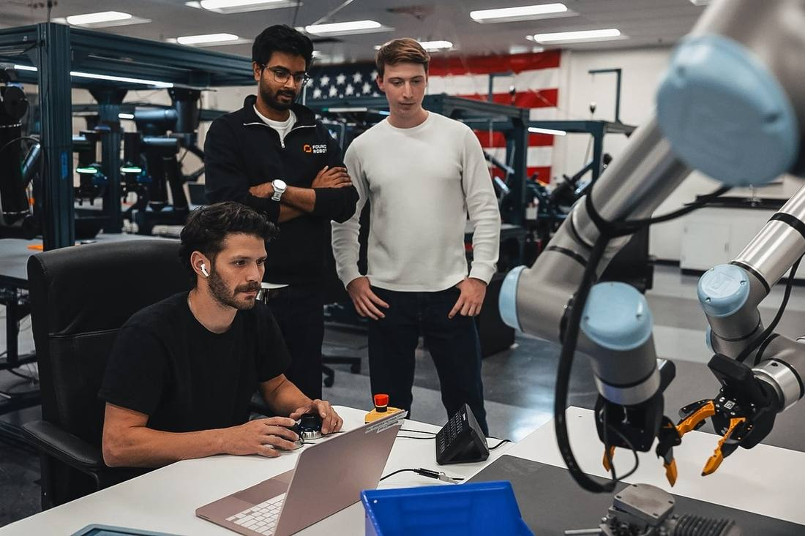
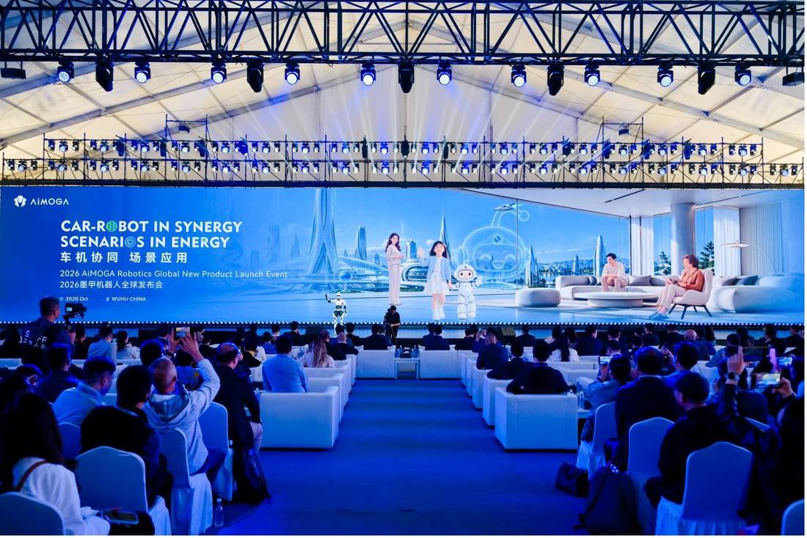

Humanoids, embodied AI and automation — real deployments, not demos.
 Agility Robotics Debuts on Nasdaq as AGLT, First U.S. Public Pure-Play Humanoid MakerAgility Robotics began trading on the Nasdaq on November 5, 2026, under AGLT and AGLTW, becoming the first U.S. publicly listed pure-play humanoid robotics company with proven, active commercial deployments. The business combination and related financings raised approximately $465 million in gross capital, including a Foxconn-led private investment, and Agility holds more than $300 million in committed multi-year orders for Digit 5, its next-generation humanoid. This follows flash 215, which covered the November 4 close of the combination.
Agility Robotics Debuts on Nasdaq as AGLT, First U.S. Public Pure-Play Humanoid MakerAgility Robotics began trading on the Nasdaq on November 5, 2026, under AGLT and AGLTW, becoming the first U.S. publicly listed pure-play humanoid robotics company with proven, active commercial deployments. The business combination and related financings raised approximately $465 million in gross capital, including a Foxconn-led private investment, and Agility holds more than $300 million in committed multi-year orders for Digit 5, its next-generation humanoid. This follows flash 215, which covered the November 4 close of the combination. Agility Robotics Closes SPAC Deal, Set to Trade on Nasdaq as AGLT on November 5Agility Robotics completed its business combination with Churchill Capital Corp XI on November 4, 2026, and the combined company is expected to begin Nasdaq trading November 5 under AGLT and AGLTW, with an expected gross capital raise of about $465 million and Digit humanoids already deployed with GXO, Schaeffler and Toyota.
Agility Robotics Closes SPAC Deal, Set to Trade on Nasdaq as AGLT on November 5Agility Robotics completed its business combination with Churchill Capital Corp XI on November 4, 2026, and the combined company is expected to begin Nasdaq trading November 5 under AGLT and AGLTW, with an expected gross capital raise of about $465 million and Digit humanoids already deployed with GXO, Schaeffler and Toyota. Uber Books $59.8 Billion in Q3 and Puts a Number on Autonomy: 700 Driverless Vehicles by Year-EndUber's third-quarter Gross Bookings rose 20% to $59.8 billion and non-GAAP EPS rose 35% to $0.88, with Adjusted EBITDA up 31% to $3.0 billion. CEO Dara Khosrowshahi said approximately 700 fully driverless vehicles are expected on the platform by year-end and over 2,000 in 2027, and Uber guided Q4 Gross Bookings of $63.25 billion to $65.25 billion.
Uber Books $59.8 Billion in Q3 and Puts a Number on Autonomy: 700 Driverless Vehicles by Year-EndUber's third-quarter Gross Bookings rose 20% to $59.8 billion and non-GAAP EPS rose 35% to $0.88, with Adjusted EBITDA up 31% to $3.0 billion. CEO Dara Khosrowshahi said approximately 700 fully driverless vehicles are expected on the platform by year-end and over 2,000 in 2027, and Uber guided Q4 Gross Bookings of $63.25 billion to $65.25 billion.
South Korea opens its first humanoid robot data factory: 12 robots do the work first, and bank the dataSouth Korea's Ministry of Science and ICT unveiled its first bipedal-humanoid data factory on November 3 at KIMM headquarters in Daejeon. Built by KIMM and ETRI, it runs 12 remotely operated robots collecting task data in its first batch, plans to expand to 25, and will open in phases to companies, universities and research institutes from the end of 2027. The project sits in the K-Moonshot humanoid track, and the government has set aside 2.3 trillion won for the humanoid industry before 2030.
Xiaomi's Humanoid Robots Clocked a Full 8-Hour Shift — and Said Nothing About OutputOn November 3, Xiaomi released a video showing a full-size humanoid robot working an 8-hour, 5-minute shift sorting center-console side covers at its auto factory, claiming it can detect and correct faults on its own. It disclosed no parts count, success rate, or number of human interventions.
Tesla Robotaxi Rolls Into Fort Worth, Its Seventh CityTesla's official Robotaxi account announced that driverless taxi service with no safety driver began in Fort Worth at 6 a.m. on November 2 — its first new city in roughly three months and its seventh unsupervised city in the United States.
$13 Billion in Half a Year: China's Robots Fix Their Brains Before Their MovesReuters reported on November 2 that Chinese embodied AI companies raised RMB 93.5 billion, about $13 billion, in the first half of 2026 across 322 deals, five times a year earlier, with funding flowing to robot intelligence developers rather than only complete-machine makers. Meta's Humanoid Robot Was Assembled in Three MonthsAccording to The Information, relayed by Reuters, Meta and Shanghai-based Fourier built a humanoid robot prototype codenamed Max in about three months. At roughly 1.5 meters tall and 48 kilograms, a second generation is already under way, and Meta says it is for internal research only, not for sale.
Meta's Humanoid Robot Was Assembled in Three MonthsAccording to The Information, relayed by Reuters, Meta and Shanghai-based Fourier built a humanoid robot prototype codenamed Max in about three months. At roughly 1.5 meters tall and 48 kilograms, a second generation is already under way, and Meta says it is for internal research only, not for sale. US$600 Million Bet on Excavators: Self-Driving Starts on the Construction SiteBedrock Robotics closed a US$600 million Series C at a post-money valuation of US$4.1 billion, led by CapitalG and Emergence Capital, to accelerate commercial deployment of autonomous excavators and self-driving construction equipment.
US$600 Million Bet on Excavators: Self-Driving Starts on the Construction SiteBedrock Robotics closed a US$600 million Series C at a post-money valuation of US$4.1 billion, led by CapitalG and Emergence Capital, to accelerate commercial deployment of autonomous excavators and self-driving construction equipment. Toyota Will Build Cars for Waymo, Starting on Japanese Roads in 2027On October 30, 2026, Toyota and Waymo announced that the 2027 bZ4X will be built at the Takaoka plant with Waymo's system integrated, testing and validation in Japan first in 2027, then expansion to right-hand-drive markets including the UK.
Toyota Will Build Cars for Waymo, Starting on Japanese Roads in 2027On October 30, 2026, Toyota and Waymo announced that the 2027 bZ4X will be built at the Takaoka plant with Waymo's system integrated, testing and validation in Japan first in 2027, then expansion to right-hand-drive markets including the UK.
$100 Million to Buy a Factory Run by RobotsFoundry Robotics announced an oversubscribed $100 million Series A: it builds and operates AI-robot autonomous assembly factories, delivering defense and commercial hardware as manufacturing-as-a-service, with the Emeryville plant reaching 130,000 square feet.ROBOTICS & AIThe Lab Bottleneck Is Not the Model, It Is the HandsOpentrons announced a $40 million Series E: its Flex lab automation platform compresses experiment design, execution and refinement into a continuous loop, with more than 11,000 robots delivered across 80+ countries.
A 0.9-Metre Home Robot Opens Global Pre-OrdersAiMOGA released Mobo, a consumer home-companion humanoid, and opened global pre-orders: 0.9 metres, 22 degrees of freedom, more than 20 languages, and a dual-brain MoAgent architecture. A 1.4-Metre Humanoid Heads to Audi to Handle Parts FirstAgile Robots and Nvidia unveiled the Agile ONE SN research humanoid, 1.4 metres with 71 degrees of freedom; the Audi pilot handles about 1 million picking and sequencing cycles a day.Tesla Doesn't Want to Build Cars AnymoreIn January 2026, Tesla announced it would end production of the Model S and Model X, converting the Fremont lines to build the Optimus humanoid robot and the Cybercab. The backdrop: a 2025 operating margin down to 4.6% and net income down 46%. A carmaker has formally rewritten itself as a robotics company.ROBOTICS & AIThis Humanoid Isn't Taking Jobs. It's Taking the Place of the Dying.Minerva Humanoids emerged from stealth on October 6 with a $10 million pre-seed led by General Catalyst. It is not competing to fold laundry or work factory lines: it builds for bomb disposal, oil and gas and high-voltage power stations — semi-autonomous and teleoperated by VR, 'not taking people's jobs, but dying in their place', with paid pilots starting this autumn.
A 1.4-Metre Humanoid Heads to Audi to Handle Parts FirstAgile Robots and Nvidia unveiled the Agile ONE SN research humanoid, 1.4 metres with 71 degrees of freedom; the Audi pilot handles about 1 million picking and sequencing cycles a day.Tesla Doesn't Want to Build Cars AnymoreIn January 2026, Tesla announced it would end production of the Model S and Model X, converting the Fremont lines to build the Optimus humanoid robot and the Cybercab. The backdrop: a 2025 operating margin down to 4.6% and net income down 46%. A carmaker has formally rewritten itself as a robotics company.ROBOTICS & AIThis Humanoid Isn't Taking Jobs. It's Taking the Place of the Dying.Minerva Humanoids emerged from stealth on October 6 with a $10 million pre-seed led by General Catalyst. It is not competing to fold laundry or work factory lines: it builds for bomb disposal, oil and gas and high-voltage power stations — semi-autonomous and teleoperated by VR, 'not taking people's jobs, but dying in their place', with paid pilots starting this autumn.